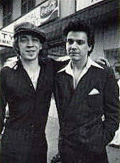
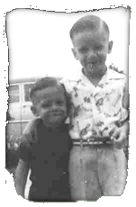
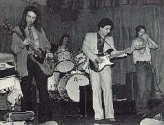
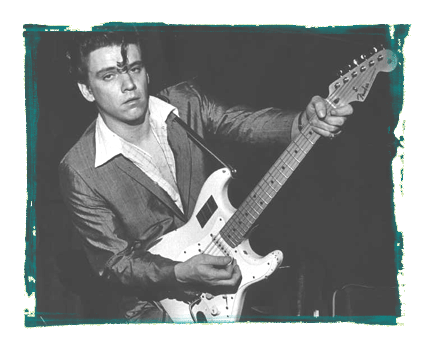
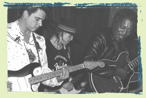

Jimmy Vaughan

"Что
меня убивает, так это когда начинают
сравнивать нашу игру" - сокрушался
однажды Стиви Рэй Воэн (Stevie Ray Vaughan), когда
речь зашла о его старшем брате Джимми. "Я
играю примерно на 80 процентов своих
возможностей, а Джимми показывает всего
один процент от того, что знает и умееет.
Однажды, я зашел к нему домой, и застал его
играющим одновременно на гитаре, педальном
басе и губной гармонике! Джимми дал мне так
много для роста. По сути, мой старший брат и
есть первопричина того, что я играю на
гитаре. И я всегда буду признателен ему за
это."

Джимми
Лоренс Воэн (Jimmie Lawrence Vaughan), гитарная легенда,
ключевая фигура в становлении остинской
блюзовой сцены 70-х, родился 20 марта 1951 года в
местечке Оак Клифф, Южный Даллас, штат Техас.
Свою первую гитару получил в подарок в 12 лет
от Стива Стивенсона (Steve Stevenson) после того,
как сломал ключицу, играя в футбол. То, что
на инструменте было всего три струны,
ничуть не смутило Джимми. В первый же день
он сочинил три песни, и в семье решили, что
Джимми не просто талантлив, он - гений.
Джимми на самом деле обнаружил
удивительные способности. Услышав раз
мелодию, он легко запоминал ее и
воспроизводил близко к оригиналу. "Как
будто бы он играл это всю жизнь" - ахала
его мать Марта Воэн. За старшим братом
тянулся и младший Стиви. Много ночей Марта,
открыв дверь спальни, заставала своих ребят,
спящих с гитарами в руках.
Коллекция пластинок Джимми росла каждую
неделю. Основу ее составили B.B. King, Johnny and the
Hurricanes, Kenny Burrell and Jimmy McGriff, The Ventures, Santo and Johnny,
Dick Dale and the Del Tones, Chuck Berry, Muddy Waters, T-Bone Walker, Lightnin'
Hopkins, The Johnny Burnette Trio, Howlin' Wolf, Little Walter and Richard, Slim
Harpo, Brother Jack McDuff , Larry Williams, Buddy Guy, Albert King. Если
на записи была партия гитары, то он
обязательно снимал ее.
Первая группа Джимми называлась "Swinging
Pendulums". В нее, кроме самого Джимми, вошли
басист Фил Кембэлл (Phil Campbell) и барабанщик
Ронни Стерлинг (Ronnie Sterling). Первый
профессиональный ангажемент группа
получила в клубе "Hob Nob Lounge". Вскоре они
уже нарезали в "Beachcomber", "The Fog Club",
"Surfers-A-Go-Go", "The Funky Monkey", и даже в
"The Loser 's Club", кабаке, в котором Билли
Джоэл (Billy Joel) когда-то играл на пианино в час
скидок на выпивку. Вскоре после этого,
Джимми сближается с Дойлом Брэмхоллом (Doyle
Bramhall) и его братом Дэйлом, и становится
участником группы "The Chessmen". В округе
было полно бэндов, но по своему уровню они
были гораздо слабее новой команды Джимми
Воэна.
С творчестом Хендрикса старший из братьев
Воэн познакомился, когда "The Chessmen"
участвовали в местной развлекательной ТВ-программе
для тинейджеров "Sumpin' Else" . Он нашел
промо-сорокопятку "Purple Haze" в куче
какого-то хлама. Имея смутное представление
о том, что держит в руках, Джимми захватил
пластинку домой, поставил на вертушку и
обалдел. "По мне, это звучало как Мадди
Уотерс, только еще неистовей "- впоминал
Джимми - Настоящий наркоманский блюз.Полное
чувственое переживание, вовлекающее пальцы,
мозг и все остальное тело." Потом Джимми
купил альбом, заслушал его до дыр, изучил
вдоль и поперек. Как и Хендрикс он научился
играть на гитаре за спиной и зубами, и
иногда даже зажигал инструменты.
Когда Jimi Hendrix Experience выступали в Далласе и
Хьюстоне, "The Chessmen" были приглашены в
качестве разогревающего состава. Понятно,
что по этому случаю, группа Джимми Воэна не
стала играть свои ковера Jimi Hendrix Experience,
отдав предпочтение композициям "Cream".
Символичен факт, что на Хендрикса произвели
впечатление звук Воэна и его оборудование.
Кончилось все тем, что Хендрикс выложил 40
баксов и свою педаль wah-wah в обмен на VOX wah-wah
Джимми Воэна.
Вскоре после этого Дойл Брэмхолл
подхватил гепатит, да заболел так сильно,
что слег в постель на несколько месяцев.
Басист подался в Мидлэнд (Западный Техас),
где сделался "христианским"
музыкантом. "The Chessmen" распались.
Но Джимми не огорчила кончина группы. К
тому времени его уже достало играть Top 40. Он
понял, что нужно менять подход к делу. Когда
Дойл поправился, двое друзей собрали новую
группу и назвали ее "Texas Storm". В
репертуаре этого бэнда предпочтение
отдавалось уже не Beatles, а соулменам вроде
Эдди Флойда (Eddie Floyd) и Сэма и Дэйва (Sam and Dave).
Джимми Воэн, симпатичный чувак с черным Les
Paul'ом и усилком VOX, ерундой больше не
занимался. Теперь его любимым занятием
стали гитарные дуэли с Багсом Хендерсоном
(Bugs Henderson) из "The Dream" и Сибом Мидером (Seib
Meader), лидером достаточно известной в
последствии глэм-роковой группы "The
Werewolves". За Джимми закрепилась репутация
крутого гитариста, но сложилась она за счет
его доходов - промоутеры и владельцы клубов
были больше заинтересованы в Тор 40.

Более
удачными получались вылазки в Остин,
столицу штата, место, где студентов было
больше, чем где либо на всем Юго-Западе.
"Texas Storm" подписал "The Vulcan Gas Company" -
первый музыкальный клуб в Остине, где стали
тусоваться хиппи. Он был основан Хьюстоном
Уайтом (Houston White) и Сэнди Локэттом (Sandy Lockett) в
1967 году и располагался на Конгресс авеню, 400.
Самая разнообразная музыка на маленькой
сцене клуба сочеталась со световыми
эффектами, которые в то время были еще в
диковинку.
Чтобы избежать конфликтов с полицией и
ведомством по контролю за оборотом
алкоголя, в клубе вообще не продавалось
спиртное, даже пиво. "Музыка без выпивки"
- такая радикальная концепция выделяла
"Vulcan" среди остальных клубов Остина и
быстро привлекла к нему внимание нового
поколения рок-групп находящихся в турне.
Благодаря "Vulcan" в Остине состоялись
выступления "Velvet Underground", "Moby Grape",
"The Fugs". На местном уровне "The Vulcan Gas
Company" стал средством, разрушившим барьеры
между черными и белым Остином, представляя
основных блюзовых артистов хиппующей
студенческой братии. На сцене клуба
выступали John Lee Hooker, Freddie King, Big Mama Thornton, Jimmy Reed,
Sleepy John Estes и Lightnin'Hopkins.
Денег от выступлений хватало не всегда, и
чтобы сводить концы с концами Джимми и
Дэнни днем подрабатывали на стройке.
Однажды это повлекло за собой забавное
проишествие. Они связались с одним негром -
подрядчиком, жаждавшим стать музыкальным
промоутером. "Вы у меня будете есть
бифштексы на следующей неделе" -
возбужденно обещал он парням. Вместо
бифштексов у четверых музыкантов скрипел
песок на зубах - они рыли канавы для этого
мужика. Но их новый "менеджер"
оптимизма не терял. В конце концов он вписал
их в несколько маленьких ночных клубов для
черных в окрестностях городков Бэстроп и
Элгин. Джимми он представил как Фредди
Кинга младшего. Реакция была вполне
предсказуемой: одного взгляда на Джимми
было достаточно и аудитория знала, что он не
был сыном Фредди Кинга. Но едва заслышав
знакомые ноты инструментала "Hideaway"
публика меняла гнев на милость. Понятно,
такое сотрудничество не было долгим, и этот
опыт убедил музыкантов в том, что не стоит
доверять дела кому попало..
На Остинской сцене была своя местная
иерархия. Джимми и еще один выходец из
Далласа Дерек О'Брайен (Derek O'Brien) считались
молодыми гитарными шовинистами, идущими по
стопам Билла Кэмпбэлла (Bill Campbell), лучшего
белого блюзового гитариста в Остине, ярого
последователя Альберта Коллинза (Albert Collins).Но
Джимми подходил к музыке иначе чем другие.
Он убеждал всех, что дело не ограничивается
набором ритм-энд-блюзовых песен. Нужно
ухватить суть. Чувство, а не совершенство,
вот ключ к пониманию музыки. Если в чьей-то
песне была лажа, Джимми одобрительно
улыбался: "Все нормально. Ты что, не понял?!
Блюз изначально не должен быть без изъянов.
Он должен быть грязный, сырой, жирный... Да
какой угодно, только не безупречный!"
В пятнадцать лет Джимми уже освоил все
гитарные трюки, делалая разные
"frentafrentafrentas" и "hiddleyhiddleyhiddleys" так
быстро, насколько могли позволить его
пальцы. Но со временем, он пришел к тому, что
две-три ноты могут сказать гораздо больше
чем пятнадцать, если там есть чувства.
Принципам Джимми следовал и его младший
брат Стиви, при каждой возможности ходивший
смотреть выступления "Texas Storm". Выражая
свой восторг, он взбирался на стулья, и
вопил в конце каждой песни. А в перерывах
между отделениями приставал к Джимми с
просьбой показать очередную гитарную фишку.
Рождение новой группы Джимми Воэна
совпало с открытием в Остине клуба
"Antone's", ставшего в последствии
былинным. Удачливый торговец Клиффорд
Энтоун (Clifford Antone) очень любил блюз. Он
переделал подсобное помещение своего
магазина в репетиционый зал и наводнил его
всеми видами гитар, усилителей и прочим
оборудованием. Там его друзья: братья Воэн,
Дойл Брэмхолл, Билл Кэмпбэлл, Анжела Стрэли(Angela
Strehli) могли слушать свои любимые блюзовые
записи и сочинять свои собственные блюзы.
После того, как магазин закрывался,
Клиффорд любил подурачиться с бас-гитарой в
джем-сейшенах на своей репетиционной базе.
Частенько он восклицал: "Как здорово,
если бы был ночной клуб, где можно
заниматься этим все время! Чтобы блюз в этом
клубе был основной темой! Чтобы уважить тех
леди и джентльменов, кто создал эту
удиительную музыкальную форму! Как здорово,
если был бы ночной клуб, в котором они могли
выступать!"
В 1975 году в Остине разрешили продавать
спиртное до двух часов ночи, и Клиффорд
отважился превратить мечту в реальность.
Билл Кэмпбэлл сказал ему, что видел вывеску
"сдается в аренду" на старом
универмаге "Levine's". Глядя через витрину
этого магазина, который находился на
окраине известной своими беспорядками
Шестой улицы, Клиффорд воскликнул: "Здесь
будет лучший блюзовый клуб на планете!"
"Мы входили в найт-клабовый бизнес нетак,
как большинство людей входят в него"-
рассказывал потом Энтоун. " Прежде всего
мы хотели пропагандировать блюз, и бизнес
по-настоящему никогда не заслонял это.
Обычно, если вы рискуете, то вы понимаете,
что рискуете. Но мы даже не думали об этом.
Кого это заботило?!"
Клиффорд выискивал для клуба самых разных,
зачастую уже старующих блюзовых легенд, и
когда они выступали, "Antone's" очень
сильно смахивал на школу. Для Стиви, Джимми
и их друзей, стремящихся впитать настоящий
блюз, миссионерское усердие Клиффорда
открыло уникальные возможности. Так,
например, они могли узнать, как Лези Лестер
добивается такого звука на гармонике в
"Sugar Coated Love", спросив об этом его самого.
Среди "профессоров" в "школе" были
также Хуберт Самлин (Hubert Sumlin) - гитарист
Хаулин Вулфа (Howlin' Wolf), Лютер Такер (Luther Tucker),
игравший с Мадди Уотерсом, Эдди Тэйлор (Eddie
Taylor) - правая рука Джимми Рида (Jimmy Reed).
Ветеранам доставляло большое удовольствие
не только видеть, что молодежь интересуется
их мастерством, но и получать приличное
вознаграждение за свои уроки.

Итак,
открытие "Antone's" совпало с рождением
новой группы Джимми Воэна. Джимми сдружился
с Кимом Уилсоном (Kim Wilson), мастером губной
гармоники из Миннесоты. Джимми ездил в
Миннеаполис и три ночи джемовал в группе
Кима. Они играли вместе, вместе кутили и
обсуждали дела. Джимми вернулся домой, но он
и Ким продолжали общаться. В конце концов,
Джимми убедил Кима, что тот ничего не
потеряет, если переедет в Техас, и что здесь
они могли бы собрать свою группу.
Первые шесть месяцев утрясался состав
нового бэнда, который назвали "Fabulous
Thunderbirds". Группа стабилизировалсь, когда в
ней закрепились басист Кит Фергюсон (Keith
Ferguson), помнивший Джимми еще в "Chessmen", и
барабанщик из Форт-Уорта Майк Бак (Mike Buck),
чья обширная коллекция раритетных блюзовых
записей, включала даже таких малоизвестных
легенд как Li'I Millet и Count Rockin' Sidney.
На сцене пара Ким и Джимми была чистым
динамитом. Сольные и ритмические линии
стратокастера Джимми сочетались с пением
Кима и ревом его гармоники. Вместе это было
так, как будто бы Little Walter и Muddy Waters
реинкарнировались как белые парни.
"Fabulous Thunderbirds" разогревали, либо
подыгрывали почти всем, кто приезжал
выступать в "Antone's". Джимми Рид
воссоединился в "Antone's" с Эдди Тэйлором,
используя ритм-секцию "T-birds", к
восторгу Джимми Воэна выступавшего на
разогреве.( К сожалению, неделю спустя
помолодевший Рид, буквально взорвавший
сцену на Шестой улице, внезапно умер в
Калифорнии от приступа эпилепсии). Группа
Джимми Воэна открывала шоу и тогда, когда
Мадди Уотерс заехал в "Antone's" отыграть
уик-энд. После вступительного
инструментала, весь Muddy Waters Band выглянул из
гримерки, и черные парни не поверили своим
глазам. На сцене четверо клево прикинутых
белых парней играли самый что ни на есть
черный блюз, да как играли!!! В конце первого
вечера Ким несмело подошел к Мадди и
получил от него самый шикарный комплимент в
своей жизни: "Может,ты мне подыграешь
когда-нибудь?" Мадди рассказывал о
"Fabulous Thunderbirds" и "Antone's" везде, где
бывал. Эффект был моментальным. Джимми стал
получать звонки со всех концов страны: "Могут
ли "T-Birds" выступить у нас в городе?"

Мадди
Уотерс был не единственым Джентльменом,
который заметил "Fabulous Thunderbirds". Бадди
Гай, которого с Джимми свел тот же Клиффорд,
вернулся в из Остина в Чикаго полный
впечатлений. "Я был на самом деле удивлен,
когда в первый раз играл там" - говорил он
в интервью журналу "Guitar Player"- "
потому, что даже не представлял насколько
хорошо они знают блюз и как много умеют. А
этот парень, Джимми, совсем задвинул меня, и
мне ничего не оставалось, как стоять в
стороне и смотреть. Я не могу сказать "нет",
когда меня приглашают в Остин, и каждый раз
еду туда потому, что Джимми, его брат и еще
пять-шесть парней - такие же бузотеры как и я
сам!"
Еще один ветеран, перед которым
преклонялись Джимми и компания, был никто
иной как Альберт Кинг. Еще подростками они
фанатели по его Gibson Flying V. Когда Кинг впервые
выступал в "Antone's" оба брата Воэн были
там, чтобы приветствовать его.
 Игра
"Fabulous Thunderbirds" стала стандартом,
которому начали следовать молодые группы.
Кроме этого, "T-birds" служили
подтверждением того, что свежие блюзовые
силы сосредоточены именно в Остине. И
вскоре, Остин теряет репутацию "дешевого"
города и превращается в самый настоящий
boomtown.
Игра
"Fabulous Thunderbirds" стала стандартом,
которому начали следовать молодые группы.
Кроме этого, "T-birds" служили
подтверждением того, что свежие блюзовые
силы сосредоточены именно в Остине. И
вскоре, Остин теряет репутацию "дешевого"
города и превращается в самый настоящий
boomtown.
В 1979 году "T-birds" заключают контракт на
запись с небольшим независимым лэйблом
"Takoma records", и выпускают пластинку "Girls
Go Wild". Потом были "What's The Word"(1980, Crysalis
records) , "Butt Rockin"(1981, Crysalis records), "T-bird
Rhythm"(1982, Crysalis records). Альбом 1986 года "Tuff
Enuff", вышедший на "Epic-Sony" стал
платиновым, отправив, в добавок, свой
заглавный сингл в американский Тор 10. Так к
"Fabulous Thunderbirds" пришла общенациональная
известность.
Периодически Джимми отлучался из группы,
чтобы делать что-то на стороне. Чаще всего с
братом Стиви, который в 1983 году потряс
музыкальный мир своим великолепным
альбомом "Texas Flood". К тому времени, это
был уже Стиви Рэй Воэн, а его шелковое, в
духе Хендрикса, кимоно, черное сомбреро и
инициалы SRV на потрепаннном страте стали
"торговыми марками". Джимми Воэн
помогал брату в записи его второго альбома
"Couldn't Stand The Weather" (песни "Couldn't Stand The
Weather" и "The Things (That) I Used To Do") и в ряде
концертных выступлений.
После успеха "Tuff Enuff" в "T-birds"
стал развиваться кризис, приведший к уходу
из группы Джимми Воэна. Он стал расходиться
во взглядах с Кимом Уилсоном. Классическая
блюзовая прогрессия в конце концов достала
Джимми. Ему хотелось осваивать новые
территории. К примеру , он открыл для себя
гавайскую steel-гитару и джаз. Ким же считал,
что "Fabulous Thunderbirds" должны оставаться
официальными хранителями американского
блюзового огня. А компания звукозаписи
нуждалась в очередной хитовой записи и ее
не интересовало какой стиль музыки это
будет. Но последовавший за "Tuff Enuff"
альбом 1987-го года "Hot Number" как в
коммерческом, так и в творческом плане
вышел неудачным. Без искры получилась и
следующая пластинка "Powerfull Stuff".
В это время Стиви Рэй подбивает старшего
брата на совместную запись вне контекста
своей группы "Double Trouble" и "Fabulous
Thunderbirds". Продюсером альбома с рабочим
названием "Very Vaughan" был приглашен Найл
Роджерс (Nile Rodgers). Стиви работал с ним, когда
записывал гитарные треки к пластинке
Дэвида Боуи (David Bowie) "Let's Dance". После того,
как в Далласе и Остине были закончены демо,
братья перебрались в Мемфис в Ardent studios, где
началась основная работа. Первоначально,
Стиви и Джимми планировали самостоятельно
прописать все инструмунтальные партии,
включая бас и барабаны. Но Найл Роджерс
убедил братьев сосредоточиться на гитарной
работе, и доверить ритм-секцию студийным
музыкантам. Роджерс пригласил на сессию
бассиста Эла Берри (Al Berry) и барабанщика
Ларри Эбермана (Larry Aberman). Они никогда раньше
не играли с Воэнами и вообще, мало что знали
о них.
Две из десяти записанных композиций
("White Boots" и "Good Texan") являли собой
дебют Джимми Воэна - вокалиста. "Это
здорово, что они заставили его петь -
восклицал Майк Бак, участник оригинального
состава "T-birds" - Раньше только Лези
Лестеру как-то по пьяни удавалось сделать
это".
Когда основная работа над альбомом, который
окончательно назвали "The Vaughan Brothers, Family
Style", была закончена, "Double Trouble" и
"Fabulous Thunderbirds" стали хэдлайнерами
новоорлеанского джазового фестиваля, а
после участия в остинском T-bird Riverfest Джимми
Воэн заявил о своем уходе из "Fabulous
Thunderbirds".
Судьба распорядилась так, что "Family
Style" стал последней студийной работой
Стиви. 27 августа 1990 года, за две с половиной
недели до официального релиза этого
альбома, Стиви Рэй Воэн трагически погиб в
вертолетной катастрофе. "Все меняется,
когда что-то подобное происходит в твоей
жизни - говорил Джимми в интервью "Boston
Globe" - Я не прекратил играть, но не хотел ни
выступать, ни записываться." Публичные
выступления в последующие полтора года
свелись к джему с Эриком Клэптоном (Eric Clapton),
Бадди Гаем и Робертом Крэем(Robert Cray) в
лондонском Royal Albert Hall, а также к сетам с
Бобом Диланом (Bob Dylan) и Лези Лестером в
Остине.
Джимми посчитал себя по-настоящему
ответственным за творческое наследие брата,
дабы оно не было пущено по ветру, как в
случае с Хендриксом. Около года Джимми
провел в студии, отбирая и доводя до ума
сохранившиеся треки Стиви Рэя и его группы
"Double Trouble". Результатом стали два
посмертных альбома "The Sky Is Cryin'" и "In
The Begining", концертное видео "Live At The
ElMocambo".
 В
1992 году Эрик Клэптон обратился к Воэну с
просьбой, открыть серию его (клэптоновских)
концертов. "Я был не в силах отказать ему -
вспоминал Джимми (вместе со Стиви тогда
погибли агент Клэптона, его телохранитель,
и помошник тур-менеджера) - Я собрал группу,
и мы отыграли эти концерты в феврале-марте
93-го. По-моему, их было 16, и мы получили от них
настоящее удовольствие. По возвращении
домой, я сказал себе: "Чем собираешся
заняться? А ну-ка давай-ка сделай что-нибудь!"
Так началась работа над новым альбомом..."
В
1992 году Эрик Клэптон обратился к Воэну с
просьбой, открыть серию его (клэптоновских)
концертов. "Я был не в силах отказать ему -
вспоминал Джимми (вместе со Стиви тогда
погибли агент Клэптона, его телохранитель,
и помошник тур-менеджера) - Я собрал группу,
и мы отыграли эти концерты в феврале-марте
93-го. По-моему, их было 16, и мы получили от них
настоящее удовольствие. По возвращении
домой, я сказал себе: "Чем собираешся
заняться? А ну-ка давай-ка сделай что-нибудь!"
Так началась работа над новым альбомом..."
 В
1994 году увидел свет первый сольный альбом
Джимми Воэна "Strange Pleasure". Посвященный
Стиви Рэю и Альберту Коллинзу, он хранит
трогательную и душевную атмосферу встречи
старых друзей. Ядро бэнда, который трудился
над "Strange Pleasure" составили друзья-соратники
Джимми на протяжении многих лет: Joe Sublett (саксофон);
Dr. John (пиано, бас, вокал); Denny Freeman (пиано); Richard
Hilton (клавишные); Bill Willis (Hammond B-3 орган, пиано);
George Rains (барабаны); Lou Ann Barton (вокал). Изюминку
фирменного звучания составило
принципиальное отсутствие бас-гитары и
наличие вокального трио как непременной
составляющей аранжировок. Продюсером
пластинки выступил Найл Роджерс(Nile Rodgers),
работавший над "Family Style". "Strange
Pleasure" был принят очень тепло на всех
уровнях, и стал номинантом на Грэмми в
категории "Лучший современный блюзовый
альбом".
В
1994 году увидел свет первый сольный альбом
Джимми Воэна "Strange Pleasure". Посвященный
Стиви Рэю и Альберту Коллинзу, он хранит
трогательную и душевную атмосферу встречи
старых друзей. Ядро бэнда, который трудился
над "Strange Pleasure" составили друзья-соратники
Джимми на протяжении многих лет: Joe Sublett (саксофон);
Dr. John (пиано, бас, вокал); Denny Freeman (пиано); Richard
Hilton (клавишные); Bill Willis (Hammond B-3 орган, пиано);
George Rains (барабаны); Lou Ann Barton (вокал). Изюминку
фирменного звучания составило
принципиальное отсутствие бас-гитары и
наличие вокального трио как непременной
составляющей аранжировок. Продюсером
пластинки выступил Найл Роджерс(Nile Rodgers),
работавший над "Family Style". "Strange
Pleasure" был принят очень тепло на всех
уровнях, и стал номинантом на Грэмми в
категории "Лучший современный блюзовый
альбом".
 В
1997 году вышел второй сольник Джимми "Out
There" в основном с теми же персоналиями в
главных ролях. И одним из самых заметных
последних событий стало то, что компания
Fender начала выпуск именной модели
стратокастера, названной "Jimmie Vaughan Signature
Tex-Mex Stratocaster".
В
1997 году вышел второй сольник Джимми "Out
There" в основном с теми же персоналиями в
главных ролях. И одним из самых заметных
последних событий стало то, что компания
Fender начала выпуск именной модели
стратокастера, названной "Jimmie Vaughan Signature
Tex-Mex Stratocaster".
автор: Алексей Макаров (г.Владимир)
Jimmy Vaughan в разделе Who is Who
сольные альбомы Jimmie Vaughan:
- Strange Pleasure (1993, Epic-Sony)
- Out There (1997, Epic-Sony)
- "Do You Get the Blues" (2001, Artemis)
c "Fabulous Thunderbirds":
- Fabulous Thunderbirds (1979, Chrysalis Records)
- Girls Go Wild (1979, Takoma - Crysalis records)
- What's The Word (1980, Crysalis records)
- Butt Rockin (1981, Chrysalis records)
- T-Bird Rhythm (1982, Crysalis records)
- Tuff Enuff (1986, Epic-Sony)
- Hot Number (1987, Epic-Sony)
- Powerful Stuff (1989, Epic-Sony)
- Hot Stuff GreatestHits (1992, Epic-Sony)
- Wrap It Up (1993, Epic-Sony)
со Stevie Ray Vaughan:
- Family Style, The Vaughan Brothers (1990, Epic-Sony)
также игру Джимми можно усышать на
следующих альбомах Stevie Ray Vaughan and Double Trouble:
- Couldn't Stand The Weather (1984, Epic-Sony)
- Live Alive! (1986, Epic-Sony)
- Live At Carnegie Hall (1998, Epic-Sony)
Вместе Стиви Рэй и Джимми принимали
участие в записи дисков:
- Loaded Dice, Bill Carter (1988, CBS)
- Under The Red Sky, Bob Dylan (1990, Columbia)
другие записи с участием Jimmie VAUGHAN:
- Lost In The Ocean Part 2 & The Do It (single 45, Connie records)
- Old Enough, Lou Ann Barton (1982, Asylum records)
- Stomping Grounds, Bill Carter (1985, South Coast records)
- Blues Cruise, Denny Freeman (1986, Amazing records)
- Out Of The Blue (1987, Amazing records)
- Read My Lips (1989, Antone's records)
- Bird Nest On The Ground, Doyle Bramhall (1997, Antone's records)
- Havana Moon, Carlos Santana (single)
- Riding with the King, B.B. King & Eric Clapton (2000)
- Inside Job, Don Henley (2000)
- Milk Cow Blues, Willie Nelson (2000)
- Been A Long Time, Double Trouble ( 2001, Tone Cool Records)